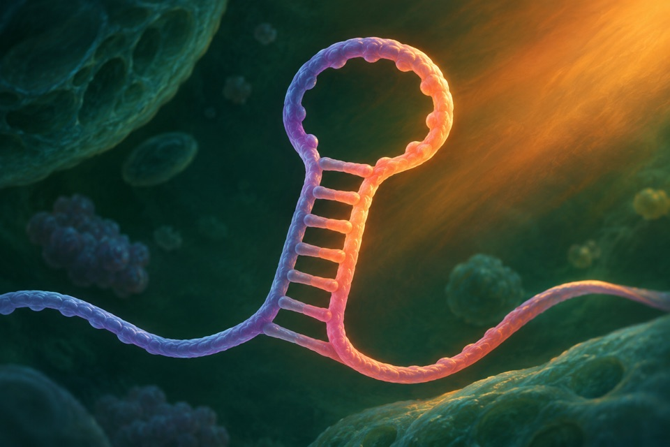
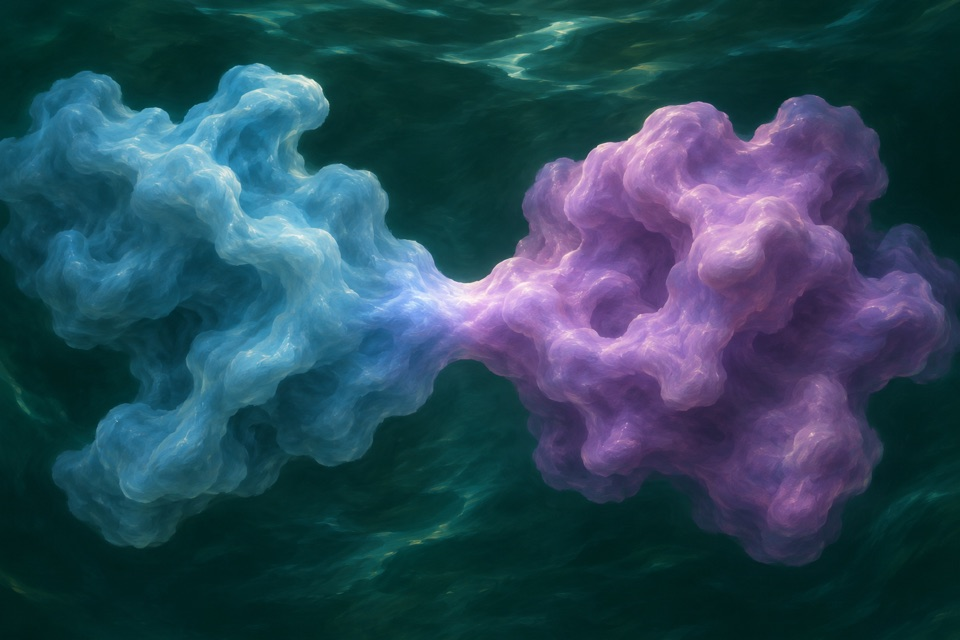
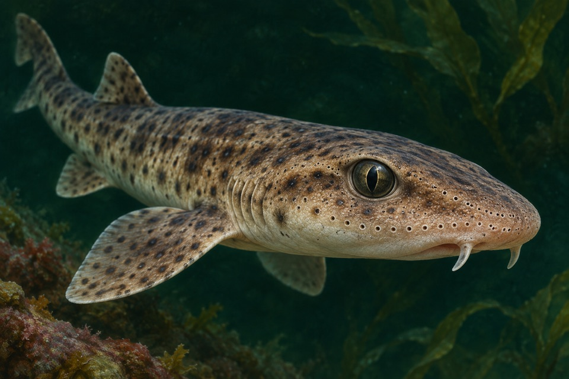

Module 01
Biliverdin-dependent near-infrared fluorescence
Measure fluorescence in a specified near-infrared wavelength band.
Evidence recordOpen any of the ten modules to see the reported observation, its sources, and the research questions still open.
Measure fluorescence in a specified near-infrared wavelength band.
Evidence record
Measure hardness and mineral distribution across a tooth.
Evidence record
Measure retention of photosynthetic activity in older leaves alongside developmental and allocation outcomes.
Evidence record
Measure succinate as a distinct product of mixed-acid fermentation.
Evidence record
Measure temperature-dependent translation from an RNA-regulated output.
Evidence record
Measure microstructure dimensions and estimate or measure surface reflection.
Evidence record
Separate nitrogenase proxy activity from direct incorporation of labeled dinitrogen.
Evidence record
Measure particle removal by moving droplets, separately from water contact angle.
Evidence record
Verify formation of a covalently joined protein product from two precursors.
Evidence record
Measure orientation to weak electric fields under sensory controls.
Evidence record